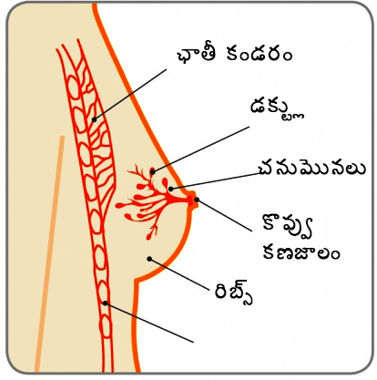

చనుమొన

నిరపాయమైన రొమ్ము ఆరోగ్య సమస్యలు
గైనేకోమస్తియా
తరుణ్, 16 సంవత్సరాల బాలుడు, తన యొక్క ఎడమ రొమ్ము ఏడాది కాలంలో ఎలాంటి నొప్పి లేకుండా పెరిగింది, దీని వల్ల అతడు ఈదే కాస్తంత ఇబ్బంది ఎదుర్కొంటున్నాడు.
భరత్, 72 సంవత్సరాల వృద్ధుడు, ఆరునెలల కాలంలో తన కుడి రొమ్ములో కణితి ఉన్నట్లుగా గుర్తించాడు
రొమ్ము

చనుమొన
గైనేకోమస్తియా అంటే ఏమిటి?
గైనేకోమస్తియా అనేది పురుషుల యొక్క రొమ్ముకణజాలం పెరగడాన్ని తెలియజేస్తుంది. ఇది సాధారణంగా, అనేక ప్రాణాంతకం కాని పరిస్థితి, ఇది ప్రధానంగా టీనేజ్ బాలురు మరియు వృద్ధులపై ప్రధానంగా ప్రభావం చూపుతుంది, అయితే, ఏ దశలోనైనా ఇది పురుషులపై ప్రభావం చూపించవచ్చు. గైనేకోమస్తియా అనేది సర్వసాధారణం అయినా, మరిముఖ్యంగా బాలురలో దీని గురించి మాట్లాడటం చిరాకు కలిగిస్తుంది కనుక, దీని గురించి తక్కువగా మాట్లాడతారు. గైనేకోమస్తియా అనేదాని వల్ల ఏమి జరుగుతుందని కొన్నిసార్లు టీనేజ్ బాలురు ఆతురత మరియు ఆందోళనకు గురవుతారు. ప్రతి ముగ్గురు టీనేజ్ బాలురులో ఇద్దరికి కొంతమేరకు గైనేకోమస్తియా అభివృద్ధి చెందుతుంది, అయితే 90% ఇది దానంతట అదే సర్దుకుపోతుంది.
గైనేకోమస్తియా మరియు యవ్వనదశ ప్రారంభానికి ప్రధాన కారణాలుబాలురు తమ టీనేజ్ వయస్సుకు చేరుకున్న తరువాత యవ్వనానికి వస్తారు. అయితే, కొంతమంది బాలురలలో కేవలం 10 సంవత్సరాల వయస్సులోనే మార్పులను గమనించవచ్చు. యవ్వన దశ ప్రారంభం కాగానే వారిలో ఈస్ట్రోజెన్ మరియు టెస్టోస్టిరాన్ హార్మోన్ల స్థాయి పెరుగుతుంది. ఈస్ట్రోజన్ రొమ్ములను పెరుగుదలకు అదేవిధంగా టెస్టోస్టిరాన్ రొమ్ముల ఎదుగుదలను నియంత్రిస్తాయి.
యవ్వన దశకు సంబంధించిన ఇతర మార్పులతోపాటుగా, బాలురు తమ రొమ్ములు పెద్దవిగా కావడం మరియు సున్నితంగా మారడాన్ని కూడా గమనించవచ్చు. యవ్వన దశలో, కొన్నిసార్లు దేహంలో టెస్టోస్టిరాన్ కంటే ఈస్ట్రోజన్ పరిణామం ఎక్కువ కావచ్చు, దీని వల్ల రొమ్ము కణజాలంలో మార్పులు చోటు చేసుకుంటాయి. ఒకవేళ శరీరంలో ఈస్ట్రోజన్ స్థాయిలు టెస్టోస్టిరాన్ స్థాయిలకంటే ఎక్కువగా ఉన్నప్పుుడ, డక్ట్లు మరియు లోబ్యులు పెరుగుతాయి మరియు రొమ్ము(లు) పెద్దవిగా కనిపించేలా మారతాయి.
15 సంవత్సరాల వయస్సు వచ్చే సరికి టెస్టోస్టిరాన్ స్థాయిలు కుదురుకొని ఈస్ట్రోజన్ స్థాయిల కంటే ఎక్కువగా ఉంటాయి. దీనిలో ఈస్ట్రోజన్ తదుపరి రొమ్ము కణజాలంపై ప్రభావం చూపడం ఆగిపోతుంది. ఒక వ్యక్తికి 19 సంవత్సరాలు వచ్చేసరికి, అతడిన రొమ్ము లేదా రొమ్ములు తిరిగి కుచించుకుపోయి, ఫ్లాట్గా మారతాయి
వయస్సు మీరడంఒక వ్యక్తి పెద్దవాడు అవుతున్న కొద్దీ, శరీరంలో మరింత కొవ్వు పెరుగుతుంది, దీని వల్ల ఈస్ట్రోజన్ ఉత్పత్తి అవుతుంది. దీనికి అదనంగా, ఒక వ్యక్తి వయస్సు పెరుగుతున్నకొలదీ కూడా టెస్టోస్టిరాన్ ఉత్పత్తి తగ్గిపోతుంది. ఈస్ట్రోజన్ స్థాయిలు పెరగడం మరియు టెస్టోస్టిరాన్ స్థాయిలు తగ్గిపోవడం వల్ల రొమ్ములు పెద్దవి అవుతాయి. తరువాత కాలంలో బరువు పెరగడం అనేదాని వల్ల రొమ్ముప్రాంతాల్లో బరువు పెరగడం కనిపిస్తుంది, దీని వల్ల రొమ్ములు పెద్దవి కావడం జరుగుతుంది. దీనిని సూడో గైనేకోమస్తియా అంటారు. చాలామంది వ్యక్తులు ఇది వయస్సు పెరగడంలో ఒక భాగం అని భావిస్తారు.
ఇతర కారణాలుకొన్ని ఔషధాలు( ప్రిస్కిప్షన్ చేయబడినవి మరియు చట్టవ్యతిరేకమైనవి) వాటి వల్ల గైనేకోమస్తియా వస్తుంది. వీటిలో ఈస్ట్రోజన్ ఉండటం జరుగుతుంది, ఇది శరీరంలో హార్మోన్ యొక్క స్థాయి పెరగడం లేదా ఈస్ట్రోజన్ వంటి ప్రభావాన్ని కలిగిస్తాయి. ఇవి కన్నాబిస్ అనే ఔషధం వల్ల కలుగుతుంది. కొన్ని ఔషధాలు టెస్టోస్టిరాన్ యొక్క ఉత్పత్తిని పూర్తిగా బ్లాక్ చేస్తాయి, లేదా టెస్టోస్టిరాన్ యొక్క ప్రసరణ స్థాయిని తగ్గిస్తాయి
అనేకరకాలైన ప్రిస్కప్షన్ ఔషధాలు శరీరంలోని హార్మోన్ సంతులనాన్ని మార్చవచ్చు. అధిక రక్తపోటు లేదా గుండె పరిస్థితుల కొరకు, కొన్ని సైక్రిటిక్ పరిస్థితులు, పొట్ట అల్సర్లు, కొన్ని క్యాన్సర్ థెరపీలు మరియు కొన్ని యాంటీబయోటిక్స్, శరీరంలో కండరాలను పెరగడం కొరకు తీసుకొనే ఔషధాలు గైనేకోమస్తియాకి కారణం అవుతాయి..
వనమూలికలుకొన్ని వనమూలికలు మరియు నిర్దిష్ట కాస్మోటిక్స్లో ఈస్ట్రోజెన్ ఉంటుంది. ఇది పిల్లలు మరియు పెద్దవారిలో ఈస్ట్రోజన్ హార్మోన్ యొక్క స్థాయిల్ని పెంచడం లేదా ఈస్ట్రోజన్ వంటి ప్రభావాన్ని కలిగిస్తుంది. వీటిని ఉపయోగించడం ఆపివేసిన తరువాత, దీని యొక్క ప్రభావం ఆగిపోతుంది మరియు రొమ్ముకణజాలాలు సైతం సాధారణ స్థితికి వస్తాయి.
డైట్ మరియు బరువుఒక వ్యక్తి యొక్క శరీరంలో ఎంత ఎక్కువ కొవ్వు కణాలు ఉంటే, అంత ఎక్కువగా ఈస్ట్రోజన్ ఉత్పత్తి అవుతుంది. దీని వల్ల రొమ్ముకణజాలాలు పెరుగుతాయి. ఆరోగ్యవంతమైన బరువును కలిగి ఉండటానికి సంతులితమైన డైట్ మరియు వ్యాయామం అవసరం
ఆల్కహాల్ఎక్కువగా మద్యం తీసుకోవడం వల్ల అది కాలేయంపై ప్రభావాన్ని కనపరుస్తుంది మరియు అనేకరకాలైన ప్రభావాలకు దారితీస్తుంది. పెద్దమొత్తంలో మద్యంలో కాలేయాన్ని ఉద్దీపనం చెందిస్తాయి, తద్వారా హార్మోన్ అసమతుల్యత ఏర్పడుతుంది. టెస్టోస్టిరాన్ యొక్క ప్రసరణ తగ్గిపోతుంది, అదేవిధంగా ఈస్ట్రోజన్ యొక్క స్థాయిలు పెరుగుతాయి( ఎందుకంటే కాలేయం ఈస్ట్రోజన్ని విఘటనం చేయలేకపోవడం వల్ల) దీని వల్ల ప్రధానంగా రొమ్ము కణజాలాలు పెరుగుతాయి.
కొన్నిసార్లు ఒక వ్యక్తికి ఎందుకు గైనేకోమస్తియా వస్తోందనే విషయాన్ని చెప్పలేం. అయితే దీనిని నివారించడం కొరకు అనుసరించే చికిత్స విధానాలు మాత్రం ఒకేవిధంగా ఉంటాయి.గైనేకోమస్తియా యొక్క లక్షణాలు ఏమిటి?
గైనేకోమస్తియాలో చనుమొనల యొక్క వెనక ఉండే రొమ్ము కణజాలం పెరగడం, అదేవిధంగా రొమ్ములు మహిళల వలే కనిపించడం వంటి లక్షణాలు కనిపిస్తాయి. గైనేకోమస్తియా ఒకటి లేదా రెండు రొమ్ములపై ప్రభావం కనపరచవచ్చు. ఆ ప్రాంతాన్ని తాకినప్పుడు మృదువుగా లేదా నొప్పిగా ఉండవచ్చు..
నిజమైన గైనేకోమస్తియా (రొమ్ము కణజాలం యొక్క పెరుగుదల) అనేది సూడో గైనేకోమస్తియాతో పోలిస్తే విభిన్నమైనది, దీనిలో కొవ్వు కణజాలాలు అభివృద్ధి చెందుతాయి. అయితే, గైనేకోమస్తియా అనేది ఈ రెండింటి యొక్క మిశ్రమం కావొచ్చు.
బాలురులో రొమ్ము అభివృద్ధిగర్భంలో ఉన్నప్పుడే రొమ్ము కణజాలం అభివృద్ధి చెందుతుంది. ఈ సమయంలో, రొమ్ములు చనుమొనల వెనక చిన్నపాటి బ్రాంచింగ్ ట్యూబ్లు వంటే ఉంటాయి. బాలురు తమ టీనేజ్కు చేరుకునేంత వరకు వారి రొమ్ముకణజాలం బాలికల వలేనే ఉంటుంది. అయితే వారు యవ్వనంలోనికి చేరుకున్న తరువాత పెరిగిన హార్మోన్ స్థాయిలో రొమ్ము కణజాలం తదుపరి అభివృద్ధి చెందడంపై ప్రభావం చూపుతుంది.
బాలికలు, ఈస్ట్రోజన్ హార్మోన్ వల్ల రొమ్ములు పెరగడం అదేవిధంగా డక్ట్ల యొక్క చివరల్లో పాల గ్రంధులు ఏర్పడతాయి, తద్వారా మహిళల యొక్క రొమ్ములు చనుమొనల వరకు పాలను తీసుకెళ్లగలుగుతాయి
యవ్వనదశలో బాలురలోనూ అధిక మొత్తంలో ఈస్ట్రోజన్ ఉత్పత్తి అవుతుంది, అయితే వారి టీనేజ్ కాలం ముగిసిన తరువాత, వారిలో టెస్టోస్టిరాన్ హార్మోన్ ఎక్కువగా ఉంటుంది. ఇది రొమ్ము కణజాలంలో ఈస్ట్రోజన్ యొక్క ప్రభావాన్ని తగ్గిస్తుంది, మరియు రొమ్ములు సాధారణ స్థితికి వస్తాయి
గైనేకోమస్తియా ఏవిధంగా నిర్ధారించబడుతుంది.
స్పెషలిస్టు ద్వారా క్లినికల్గా రొమ్ము పరీక్ష మరియు రెండు రొమ్ముల ఆల్ట్రాసౌండ్ స్కాన్ అవసరం అవుతాయి. ప్రాథమిక మదింపు ఆధారంగా, స్పెషలిస్టు మామ్మోగ్రామ్( రొమ్ముల యొక్క ఎక్స్రే) మరిముఖ్యంగా వృద్ధుల్లో నీడిల్ బయాప్సీ ( ఎఫ్ఎన్ఎసి/కోర్ నీడిల్ బయాప్సీ)వంటివి చేయించుకోవాలని కోరబడుతుంది.
గైనేకోమస్తియా అనేది ఇతర పరిస్థితుల యొక్క లక్షణాలు అంటే హైపోథైరాయిడిజం( థైరాయిడ్ గ్రంధి అధికంగా రియాక్ట్ కావడం) వల్ల కావొచ్చు, అందువల్ల స్పెషలిస్టు మెడ, పొత్తికడుపు మరియు వృషణాలను పరీక్షించవచ్చు. లివర్ ఫంన్ టెస్ట్లు, ఆల్ఫా ఫ్యాటో ప్రొటీన్ మరియు బిహెచ్సిజి వంటి బ్లడ్ టెస్టులు కూడా అవసరం అవుతాయి
గైనేకోమస్తియా యొక్క చికిత్స ఏమిటి?
చాలా సందర్భాల్లో, తిరిగి రాకుండా ధృవీకరించాల్సి వస్తుంది. నిర్ధిష్ట చికిత్స ఏదీ సలహా ఇవ్వబడదు. కొంతమంది వ్యక్తులు, తమ అదనపు రొమ్ము కణజాలాన్ని తగ్గించుకోవడం కొరకు గైనేకోమస్తియా యొక్క కారకాలను తొలగించాల్స ఉంటుంది ( ఔషధాలను మార్చడం, అధికంగా డే శరీర కొవ్వును తగ్గించడం లేదా ఆల్కహాల్ తీసుకోవడం తగ్గించాలి). కొంతమంది వ్యక్తులు, స్పెషలిస్టు ద్వారా నిర్ణయించిన విధంగా అతి తక్కు కాలానికి వైద్య చికిత్స అవసరం అవుతుంది( డానాజోల్/టమోక్సిఫ్లెన్)
సాధారణంగా, జీవనశైలి మార్పులు మరియు/లేదా ఔషధ చికిత్సల తరువాత మార్పు లేకపోయినా, లేదా ఇది మరింత ఎక్కువ కాలం ఉండటం ద్వారా జీవిత నాణ్యతపై ప్రభావం చూపిస్తున్నట్లయితేనే శస్త్రచికిత్స సిఫారసు చేయబడుతుంది.
శస్త్రచికిత్స చేపట్టడానికి ముందు స్పెషలిస్టు శస్త్రచికిత్సలో ఉండే ప్రమాదాలు గురించి వివరించాలి ఎందుకంటే గైనేకోమస్తియా యొక్క శస్త్రచికిత్స నేరుగా ఉండదు. గైనేకోమస్తియా యొక్క సైజును బట్టి మరియు రొమ్ము ప్రాంతంలో ఉండే అదనపు చర్మాన్ని బట్టి ఆపరేషన్ రకం ఆధారపడుతుంది. సాధారణ రొమ్ము సైజును పునరుద్ధరించడం అనేది దీని ప్రధాన లక్ష్యం, అయితే కొన్నిసార్లు దీనిలో ఒకటి కంటే ఎక్కువ శస్త్రచికిత్సలు అవసరం అవుతాయి
లిపోసక్షన్( ప్రభావిత ప్రాంతం నుంచి కొవ్వును తొలగించే శస్త్రచికిత్స ప్రక్రియ) అనేది అత్యంత సాధారణ ప్రక్రియల్లో ఒక్కటి. ఇది ఒక విధమైన చికిత్స లేదా కొన్నిసార్లు ఇది రొమ్మును తగ్గించే శస్త్రచికిత్స వలే ఉంటుంది (మామోప్లాస్టీ తగ్గింపుగా పేర్కొంటారు). లిపోసక్షన్ లేకుండానే రొమ్మను తగ్గించవచ్చు. పైన పేర్కొన్న అన్ని ప్రక్రియల్లో కొంత రొమ్ముకణజాలం, గైనేకోమస్తియా ఉండిపోతుంది.

గైనేకోమస్తియా వచ్చినవారికి అది ఒక ప్రమాదకరమైన, ఇబ్బంది కలిగించే మరియు ఒంటరిగా ఉండాల్సిన అనుభవాన్ని కలిగిస్తుంది. యవ్వన వయస్సులో ఉన్న బాలురు మరియు ఇతర శారీరక మార్పులను ఎదుర్కొంటున్నవారు, పెరుగుతున్న లేదా నొప్పిగా ఉన్న రొమ్ముల గురించి ప్రస్తావించడానికి ఇబ్బంది పడతారు. దీని ఫలితంగా, టీనేజ్లో ఉన్న బాలురు ఇది ఎంత సాధారణ పరిస్థితి అని తెలుసుకోలేకపోతారు. పెద్దవారు తమ రొమ్ముల్లో మార్పులను క్యాన్సర్ సూచిక అని భయపడతారు.
గైనేకోమస్తియా ఉండటం వల్ల రొమ్ము క్యాన్సర్ వచ్చే ప్రమాదం పెరగదు. అయితే, పురుషులు కూడా రొమ్ము అవగాహన కలిగి ఉండటం మరియు వారి రొమ్ముల్లో ఏదైనా మార్పులను గమనించినట్లయితే స్పెషలిస్టుకు నివేదించడం ముఖ్యం.
రొమ్ము అవగాహన 4 పాయింట్ల కోడ్